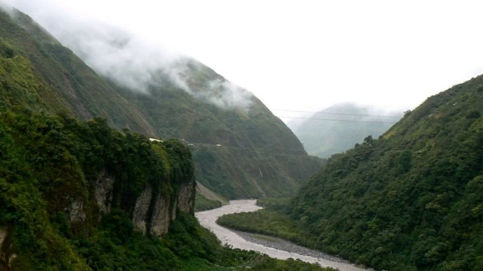

Oásis Escondido no Tocantins: Fervedouros do Jalapão Desafiam a Gravidade e Encantam Visitantes
Fervedouros do Jalapão atraem turistas com águas cristalinas e fenômeno de flutuação única no Brasil.
 Fervedouros do Jalapão: águas cristalinas e experiência única de flutuação.
Fervedouros do Jalapão: águas cristalinas e experiência única de flutuação.
No coração do Tocantins, a região do Jalapão guarda um segredo natural que fascina cientistas e turistas: os fervedouros. Essas piscinas naturais, alimentadas por nascentes subterrâneas de alta pressão, proporcionam uma experiência única onde a água parece desafiar a gravidade, permitindo que os visitantes flutuem sem esforço, como se estivessem em uma bebida gaseificada.
Localizados entre os municípios de Mateiros, São Félix do Tocantins e Ponte Alta, os fervedouros são verdadeiros tesouros do ecoturismo. A peculiaridade desses poços reside na força da água que brota do solo, criando um fenômeno de ressurgência que impede o afundamento dos corpos. A profundidade média de cerca de 2 metros esconde um fundo delicado, o que exige cuidado ao entrar para preservar o ambiente.
Entre os mais famosos, destacam-se o Fervedouro do Ceiça, conhecido por suas águas cristalinas, e o Fervedouro Bela Vista, o maior da região, com um impressionante tom azulado. As visitas são geralmente limitadas a 15-20 minutos por grupo, garantindo a segurança dos visitantes e a conservação do frágil ecossistema. Guias locais acompanham os turistas para orientar sobre as melhores práticas e garantir a proteção desses espaços.
O acesso aos fervedouros é feito por estradas de terra que exigem veículos 4x4, sendo a estação seca (de maio a setembro) o período ideal para explorar a região. A combinação de nascentes pressurizadas e solo arenoso e poroso resulta em águas de limpidez incomparável. Para proteger o ambiente delicado, passarelas de madeira guiam os visitantes até as piscinas, e a incidência da luz solar realça as cores vibrantes da água, que variam entre tons de azul e verde, criando cenários perfeitos para fotografias.
Os fervedouros do Jalapão oferecem uma experiência inesquecível, unindo a beleza natural exuberante a um fenômeno hidrológico surpreendente, que continua a atrair aventureiros em busca de paisagens intocadas e sensações únicas.
 03/06/25
Mais de 300 áreas de Manaus sem água por manutenção elétrica
03/06/25
Mais de 300 áreas de Manaus sem água por manutenção elétrica
Manutenção elétrica afeta estações de tratamento e interrompe abastecimento de água.
 30/05/25 O "Rio Invisível" do Amazonas intriga cientistasPesquisadores investigam fluxo de águas subterrâneas sob a Bacia Amazônica.
 24/06/25
Suspeito de atropelar e matar assessora jurídica no AC alega não ter visto a vítima
24/06/25
Suspeito de atropelar e matar assessora jurídica no AC alega não ter visto a vítima
Defesa afirma que suspeito não viu a vítima antes do impacto em Rio Branco.
 25/06/25
Com 23 projetos habilitados, Acre é um dos estados com maior participação no programa Rouanet da Juventude
25/06/25
Com 23 projetos habilitados, Acre é um dos estados com maior participação no programa Rouanet da Juventude
Estado investe e colhe resultados para jovens das periferias com incentivo à cultura e educação.
 25/06/25
Tocantins é destaque mundial no combate à febre aftosa
25/06/25
Tocantins é destaque mundial no combate à febre aftosa
Estado se destaca na erradicação da doença e conquista mercados internacionais.
 20/06/25
Justiça garante passe livre estudantil no AM
20/06/25
Justiça garante passe livre estudantil no AM
Decisão beneficia milhares de estudantes da rede pública do Amazonas.
 22/06/25
Motorista denunciada por homicídio culposo após atropelamento fatal em RR
22/06/25
Motorista denunciada por homicídio culposo após atropelamento fatal em RR
Acidente em Boa Vista levanta debate sobre segurança no trânsito.